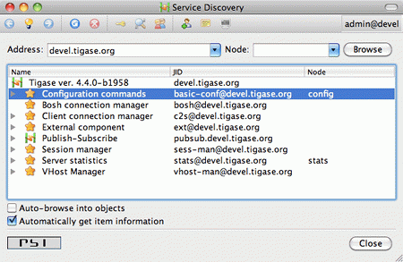

Artur Hefczyc <artur.hefczyc@tigase.net> v2.0, June 2014: Reformatted for AsciiDoc. :toc: :numbered: :website: http://tigase.net :Date: 2010-01-06 20:18
Scripting functionality is quite useful in the Tigase server for all sorts of administrator tasks. The possibility to load new scripts or replace old ones at the server runtime opens quite new area for the service maintenance.
In earlier versions of the Tigase server scripting capabilities was available only in the session manager component while it might be very useful in many other places - connection managers, MUC, PubSub, VHostManager and what even more important in completely new, custom components created for specific needs. It would be quite wasteful to reinvent the wheel every time and implementing scripting capabilities for each component separately.
Therefore the scripting capabilities has been implemented in the core of the Tigase server. It is now part of the API and is automatically available to all components without any additional coding. A detailed developer guide will be published separately.
This document describes changes from the user/administrator perspective because there are some usability changes related to the new implementation.
Please note. The description and screenshots are taken from the Psi client and most likely interface for ad-hoc commands and service discovery on other client looks different. I recommend to do some initial testing and experiments using Psi client and then switch to your preferred application for your day-to-day use.
As it always was in the Tigase you can access all the functions via XMPP service discovery on the server. However, as soon as you connect to the server you can see some changes there.

There are no command on the list. They are hidden from the main service discovery list. You can see on the list only the server main components.
This had to be done for many reasons. One of them is, obviously, the cleaner access to the main server stuff. Another, probably more important, is to avoid a long list of commands for different components mixed together. Commands for different components can have the same name/description and they can even do similar things but they are executed on a different server component. To avoid any confusion and minimise opportunities for mistake the commands are now closely tight to their components. To access a list of commands for a particular component you have to double click on the component name on the list or click 'Execute command" icon on top of the window when your component is selected.
A new window should show up with drop-down list of available commands. All the commands are related to the selected component and are executed kind of "inside the component environment". You can of course add new command or delete existing one and of course execute any of the commands showing on the list.

As a reminder, in the window title you can see the component ID and you should check it before running any command to make sure you accidentally don’t break your system.

There has been also a small change made to the script adding window. As you can see on the screenshot there is one additional option added - "Save to disk". This means that once you submitted the script to the server it is written to the hard drive and will be automatically loaded at next startup time.
This option is enabled by default as this seems to be a logical choice that the administrator wants to save his new script for later reuse. This, however requires proper configuration of the server and give writing permission to the directory where all scripts are stored. Otherwise the server won’t be able to write script files on the hard drive.
As in previous version only users with administrator permissions can execute commands and access all the critical elements on the server. There has been, however, another change made, long time requested by users. In the new version all the administrator specific elements are hidden for the rest of users.
Server components don’t show up on the service discovery, the user can’t see administrator commands nor he can execute them. This hasn’t been implemented to improve the server security but to reduce confusion for general users who would otherwise see a lot of stuff which can’t be used by them anyway.